1はじめに
記録ノートは、週の時間割から授業を開いて、生徒一人ひとりに短いメモを残していくツールです。 学期末には、そのメモをもとにAIが所見の下書きをつくります。 アカウントは先生ごとに1つで、記録したメモが他の先生に見えることはありません。
学期のはじめに一度
最初の準備
科目・クラス・生徒・時間割を登録します。ここまで済ませると、あとは毎日の記録だけになります。
授業の合間・放課後
毎日の記録
時間割から授業を開き、気づいた生徒だけメモを残します。全員分を埋める必要はありません。
学期末
所見づくり
期間を指定すると、その間のメモを材料にAIが所見の下書きをつくります。仕上げは先生が行います。
画面の移動はすべて左側のメニューから
ログインすると、画面の左にメニューが並びます。どの画面にいても、ここから他の画面へ移動できます。 いちばん下の「ログアウト」で終了します。
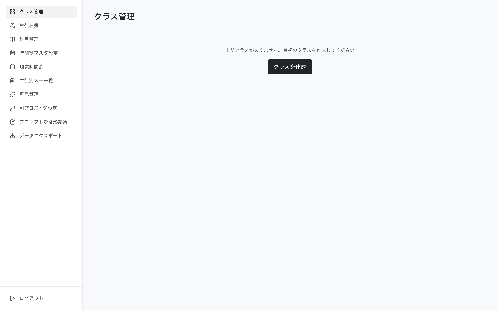
2最初の準備
登録する順番は 科目 → クラス → 生徒 → 時間割 です。 時間割は、科目とクラスが登録されていないとマスを選べないため、この順番が確実です。 30分ほどで終わります。
2-1アカウントをつくる
はじめて使うときは、ログイン画面の「新規登録」からアカウントをつくります。 メールアドレスとパスワード(6文字以上)だけで登録でき、確認メールを待つ必要はありません。
- 1ふだん使っているメールアドレスを入力します。
- 2パスワードを決めて入力します。6文字以上にしてください。
- 3学校区分で「小学校」を選びます。国語・算数など標準的な科目が自動で登録され、次の準備が楽になります。
- 4「サインアップ」を押すと登録が完了し、そのままログインした状態になります。
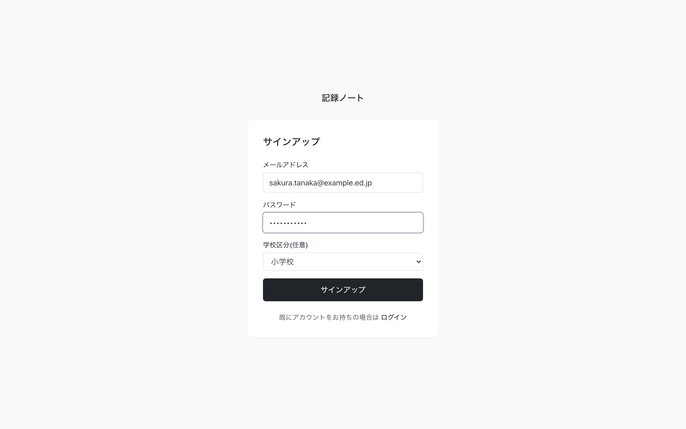
2回目からは、ログイン画面から入ります。
- 1登録したメールアドレスを入力します。
- 2パスワードを入力します。
- 3「ログイン」を押します。
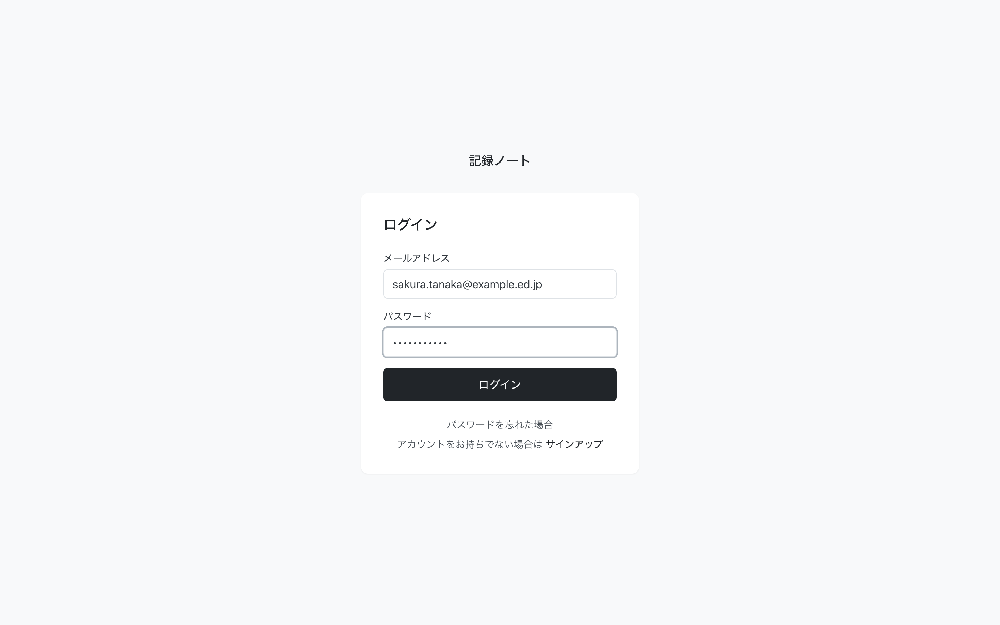
2-2科目を確かめる
左メニューの「科目管理」を開きます。サインアップで学校区分を選んでいれば、 国語・算数・理科・社会・英語・図画工作・体育・音楽・生活・総合・学活がすでに登録されています。
学校区分を選ばずに登録した場合や、あとから足したい場合は次のようにします。
- 1「標準科目セットを追加」を押すと、学校区分を選ぶ欄が開きます。
- 2学校区分(小学校・中学校)を選びます。
- 3「追加する」を押すと、まだ登録されていない科目だけが追加されます。すでにある科目が重複することはありません。
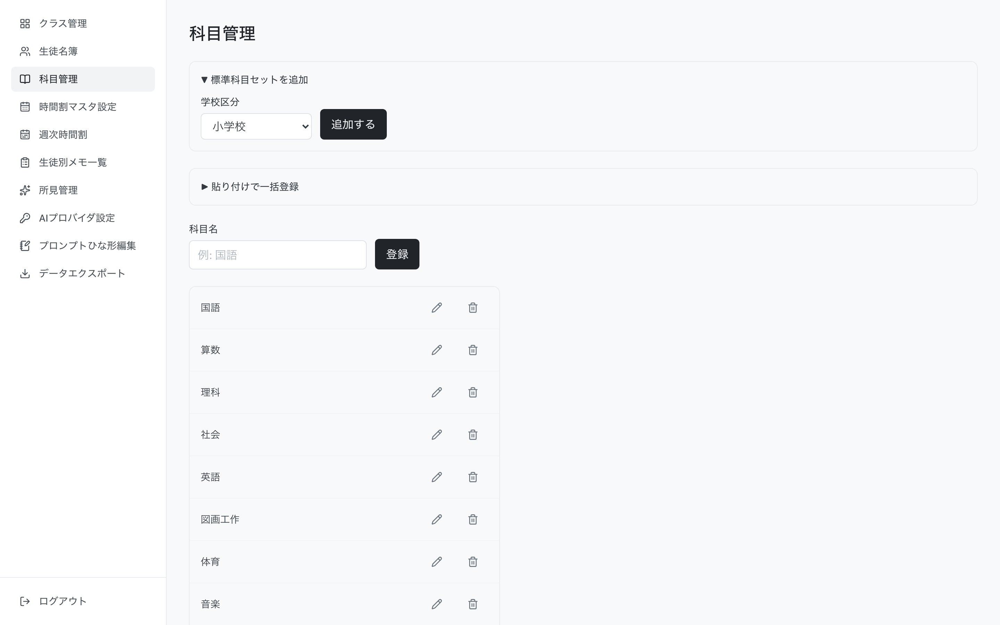
「書写」「クラブ」など学校独自の科目は、画面下の入力欄から1つずつ足せます。
- 1科目名を入力します。
- 2「登録」を押すと一覧に加わります。登録済みの科目名は、一覧の鉛筆ボタンから直せます。
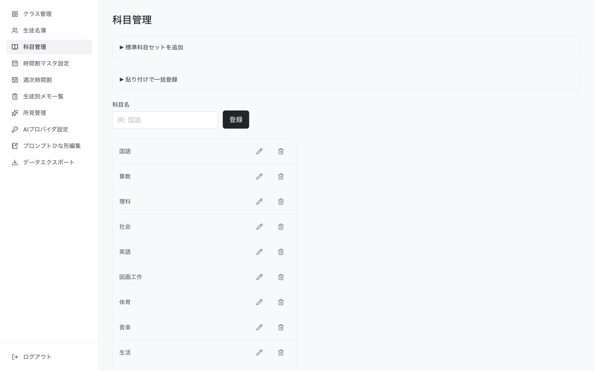
2-3クラスをつくる
左メニューの「クラス管理」を開き、「クラスを作成」を押します。

- 1学年を半角数字で入力します(例: 3)。特別支援学級のときは「特別支援学級(特支)」にチェックを入れます。
- 2クラス表示名を入力します。画面に出るのはこの名前です(例: 3年2組、ひまわり組)。
- 3「保存」を押します。
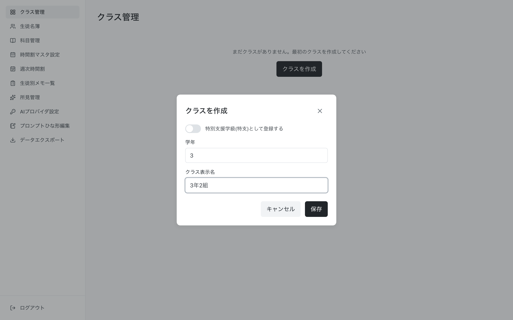
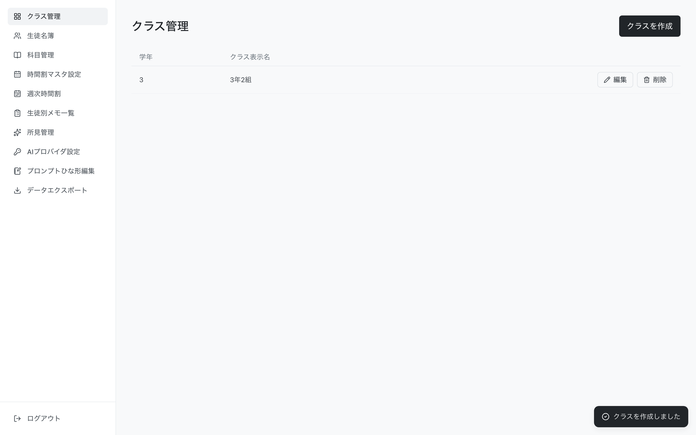
一覧の「組番号」は、クラスをつくった順に自動で振られる番号です。次に出てくる仮名コードに使われます。先生が決める必要はありません。
2-4生徒を登録する
左メニューの「生徒名簿」を開きます。名簿は1人ずつ入力しなくても、 Excelや名簿ソフトからコピーした文字を貼り付けて、まとめて登録できます。
- 1登録先のクラスを選びます。
- 2「テキスト貼り付け」を選びます(CSVファイルを読み込ませることもできます)。
- 31行に1人ずつ、
出席番号,氏名の形で貼り付けます。例:1,青木 陽菜 - 4「取り込む」を押すと、まとめて登録されます。
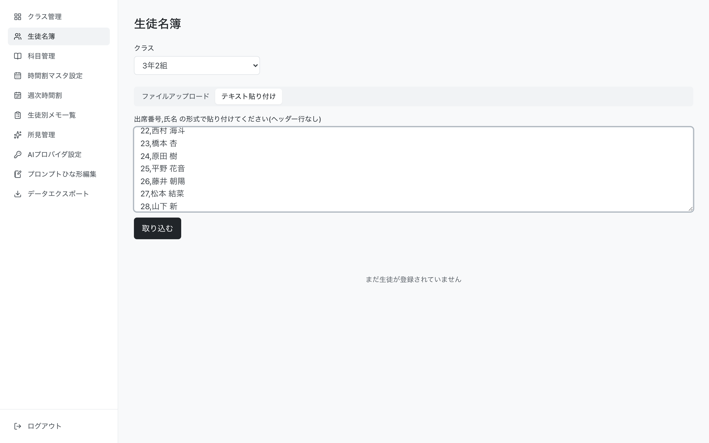
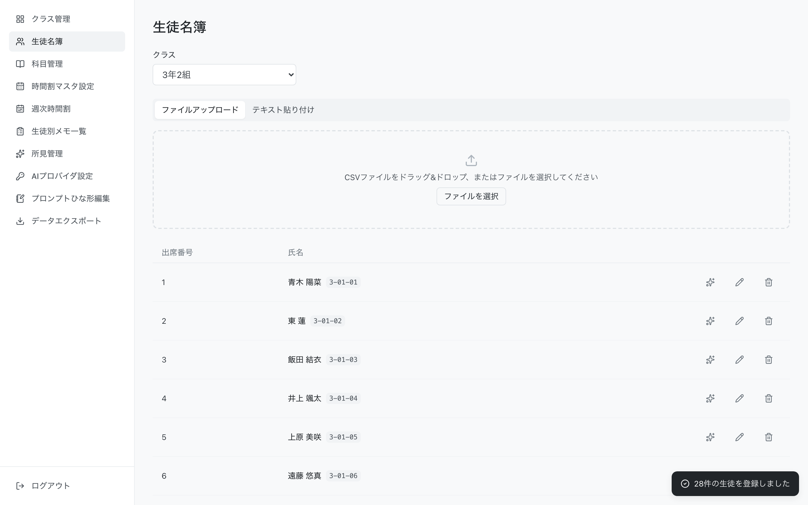
3-01-01 のような表示が仮名コードです。学年・組番号・出席番号を組み合わせた記号です。所見をAIにつくってもらうとき、生徒の氏名の代わりにこの記号を送ります。
2-5時間割をつくる
左メニューの「時間割マスタ設定」を開きます。ここでつくるのは、毎週くりかえす基本の時間割です。 学級担任のように全部の授業が同じクラスなら、一括モードを使うと早く終わります。
- 1「一括モード」を選びます。教科ごとに受け持つクラスが違う先生は「教科担任制モード」を選びます。
- 2「CSV/貼り付けで取り込む」を開き、月〜金の5列 × 1〜6限の6行ぶんの科目名を貼り付けます。学校の時間割表からそのままコピーできます。
- 3「取り込む」を押すと、下の表に反映されます。
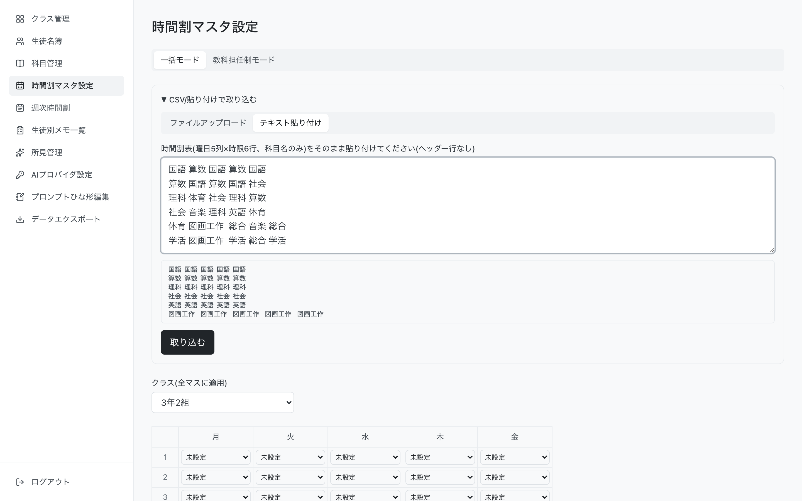
貼り付けを使わず、マスを1つずつ選んでいくこともできます。
- 1「クラス(全マスに適用)」で、担任しているクラスを選びます。30マスすべてがそのクラスになります。
- 2各マスの科目を選び直せます。空き時間は「未設定」のままにしておきます。
- 3「保存」を押すまで確定しません。最後に必ず保存してください。
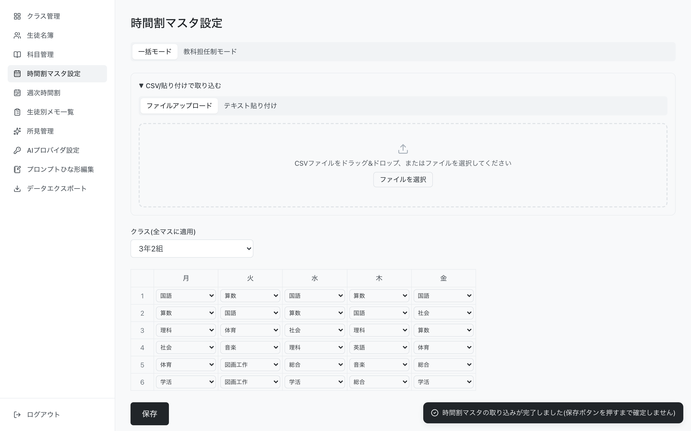
ここでつくった時間割は毎週くりかえし使われます。「今週だけ3限が体育に変わった」という変更は、次に説明する週次時間割の画面で行います。マスタを書きかえる必要はありません。
3毎日の記録
ここからが毎日使う部分です。気づいたことがあった生徒だけ、ひとこと残せば十分です。 全員ぶんを埋めなくてもかまいません。
3-1その週の時間割を開く
左メニューの「週次時間割」を開きます。開いた時点で今週が表示されます。
- 1別の週を見たいときは、日付を選ぶか「前の週へ」「次の週へ」を押します。週は月曜はじまりです。
- 2記録したい授業のマスを押します。
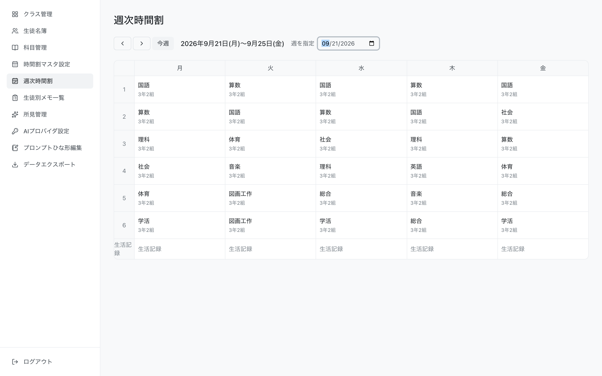
3-2授業のマスを開く
マスを押すと、小さな画面が開きます。
- 1その週だけ科目やクラスを変えたいときは、ここで選び直して保存します。基本の時間割(マスタ)はそのまま残ります。「マスタの内容に戻す」でいつでも元に戻せます。
- 2メモを書くときは「この授業を記録する」を押します。
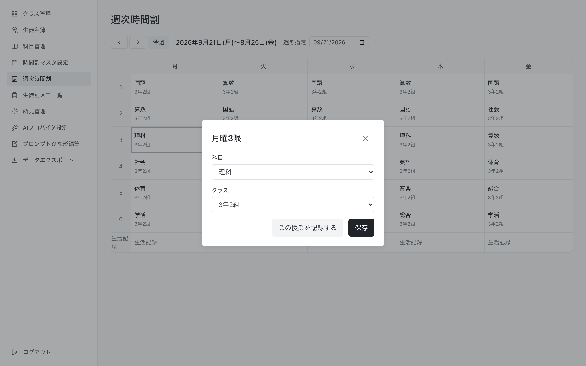
3-3メモを書いて保存する
授業記録の画面には、そのクラスの生徒が出席番号順に並びます。
- 1メモを書きたい生徒の名前を押すと、その生徒の行だけが開きます。
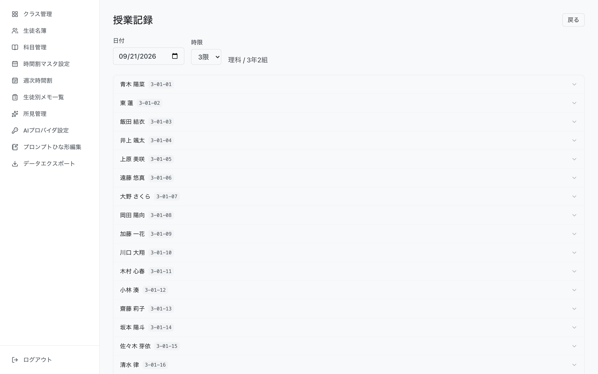
- 1気づいたことを書きます。長さは自由ですが、「何をしたか」が分かる書き方にしておくと、学期末の所見がぐっと具体的になります。
- 2共有区分の切り替えです。「共有する」のままなら、このメモは所見をつくるときの材料になります。「共有しない」に切り替えると、AIには送られず、先生の手元の記録としてだけ残ります。
- 3「保存」を押します。生徒1人ずつの保存です。他の生徒の入力には影響しません。
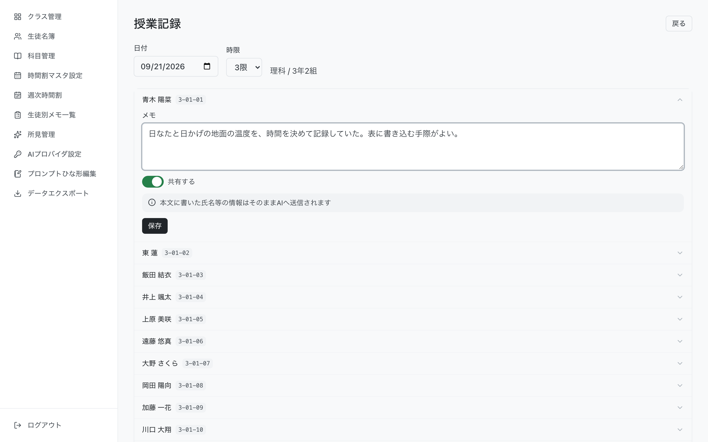
保存できた生徒には「入力済み」の印がつきます。同じ授業をもう一度開いて、書き足すこともできます。
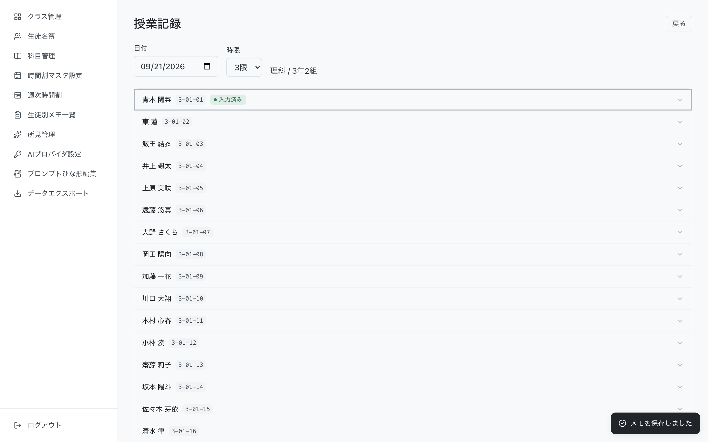
通信が切れているときなどは、行の中にエラーが出ます。入力した文章は消えません。電波の状態を確かめて、もう一度「保存」を押してください。勝手に送り直すことはしない作りになっています。
3-4生活の記録をつける
授業とは別に、休み時間や係活動など日ごとの様子を残せます。 週次時間割の下にある「生活記録」の行から、その曜日を押します。

- 1日付を確かめます。ここで別の日に変えることもできます。
- 2生徒の名前を押して、様子を書きます。1人につき1日1件です。
- 3「保存」を押します。授業のメモと同じく、1人ずつの保存です。
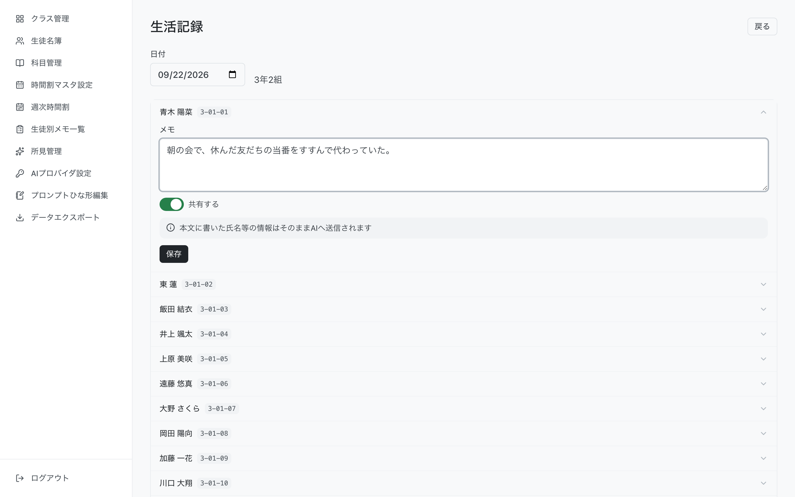
3-5生徒ごとに見返す
左メニューの「生徒別メモ一覧」を開くと、1人の生徒に書きためたメモをまとめて読めます。 面談の前や、所見を書く前の下読みに使います。
- 1クラスを選びます。
- 2生徒を選びます。
- 3並べ方を「日付順」と「教科別」で切り替えられます。
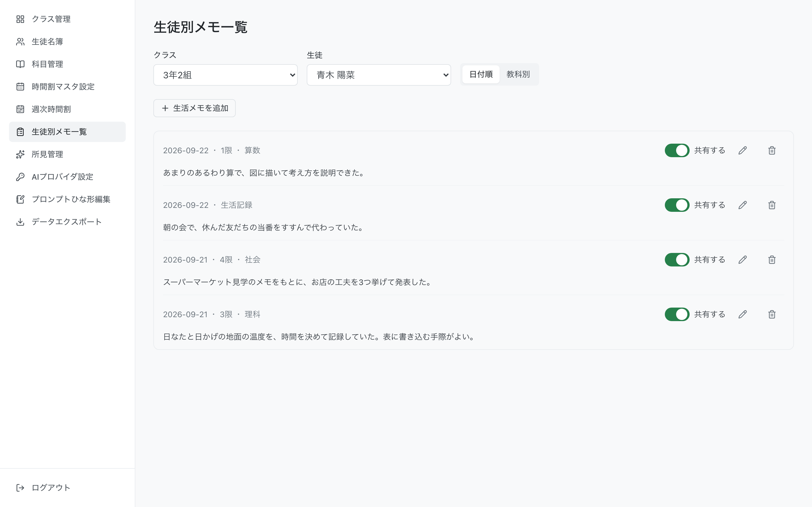
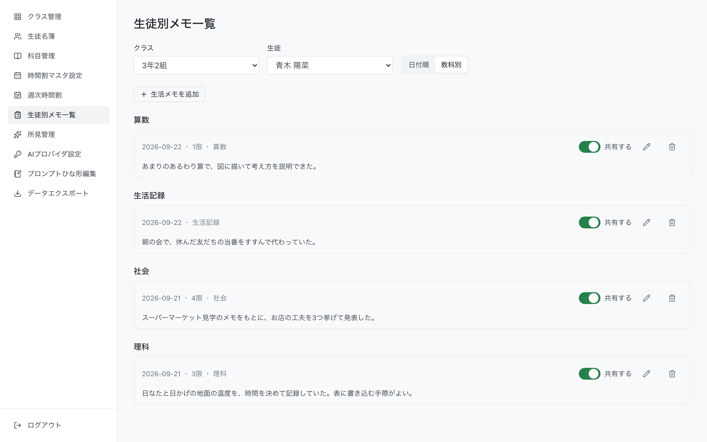
この画面でも「共有する/しない」を変えられます。ただし、すでにAIへ送ったあとの内容までは取り消せません。
4学期末の所見づくり
ためてきたメモを材料に、所見の下書きをAIにつくってもらいます。 最初に一度だけ、AIを使うための「APIキー」を登録します。
4-1AIのキーを登録する(最初の1回だけ)
ここでは、Googleアカウントがあれば使えるGeminiを例に説明します。
パソコンのブラウザで aistudio.google.com を開き、ふだん使っているGoogleアカウントでログインしてください。
- 画面の「Get API key」(APIキーを取得)を開きます。
- 利用規約への同意を求められたら、内容を確認して同意します。
- 「Create API key」(APIキーを作成)を押します。
AIza…で始まる文字列が表示されます。これがAPIキーです。コピーボタンで丸ごとコピーします。
APIキーは、学校の鍵と同じように取り扱ってください。メールやチャットで人に送らない、他の先生と共用しない、画面を共有したまま表示しない。もし外に出てしまったときは、同じ画面からキーを削除して作り直します。
コピーできたら、記録ノートに戻って左メニューの「AIプロバイダ設定」を開きます。
- 1AIプロバイダで「Gemini」を選びます。
- 2モデルを選びます。迷ったら初期値のままで十分です。
- 3コピーしたAPIキーを貼り付けます。
- 4「保存」を押します。
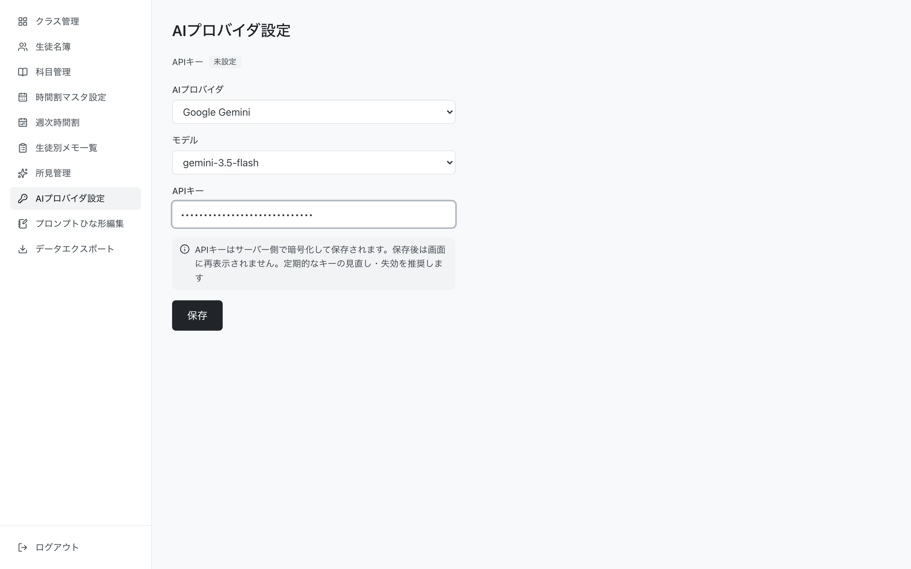
4-2所見の下書きをつくる
左メニューの「所見管理」を開きます。
- 1所見の種類を選びます。学習の所見は授業のメモから、生活の所見は生活記録から、総合の所見は「総合」の授業のメモからつくられます。
- 2対象期間の開始日を入力します(例: 学期のはじまりの日)。
- 3終了日を入力します。この期間のメモだけが材料になります。
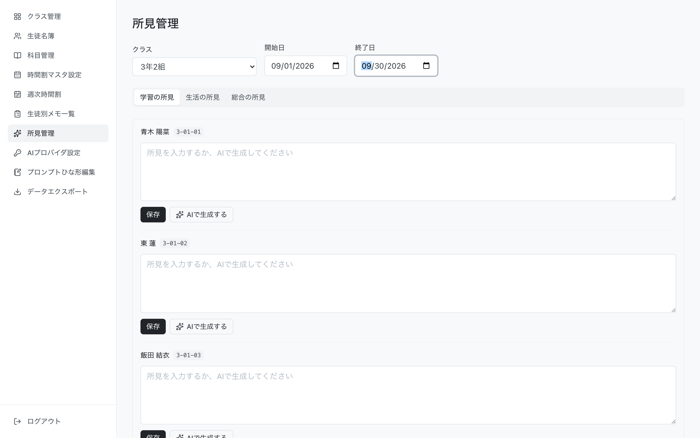
生徒の行にある「AIで生成する」を押すと、生成のための欄が開きます。
- 1作成方法を選びます。「AIで直接生成」は、この画面の中で下書きができあがります。「プロンプトを作成」は、AIに渡す文章を組み立てるだけなので、APIキーがなくても使えます(次の囲みを参照)。
- 2学年と目安文字数を確かめて「生成して所見欄に反映」を押します。数秒から数十秒かかります。
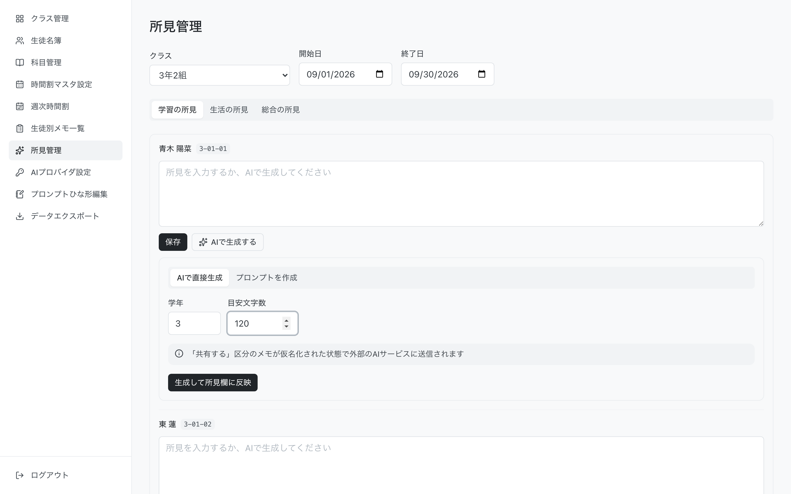
- 1できあがった文章が所見欄に入ります。ここで必ず読み返し、先生の言葉に直してください。直接書き足しても構いません。
- 2「保存」を押します。保存すると「AI生成(直接呼び出し)」「手動作成」といった作成方法の印がつき、あとから見分けられます。
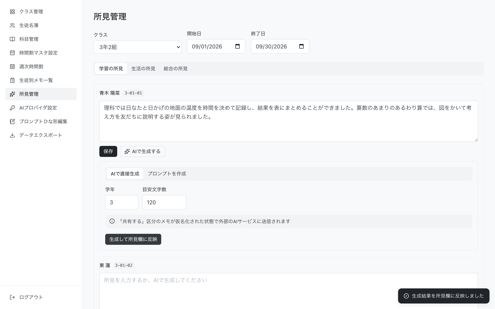
「プロンプトを作成」に切り替えると、メモをまとめた指示文がその場で組み立てられます。それをコピーして、ふだん使っているAIサービスに貼り付け、返ってきた文章を「AIの応答を貼り付け」欄に戻せば、同じように所見欄に反映できます。
送られるのは、指定した期間の「共有する」メモの本文と、学年・仮名コード・目安文字数です。
氏名は送らず、3-01-01 のような仮名コードに置きかえています。
ただしメモの本文に書いた名前はそのまま送られます。本文には「○○さん」ではなく「本人」と書くなど、書き方で工夫してください。
4-3ひな形とデータの保存
AIへの指示文(プロンプト)は、左メニューの「プロンプトひな形編集」で書きかえられます。 「常体で書く」「◯◯の観点を入れる」など、学校の書き方に合わせたいときに使います。 元に戻したいときは、初期値に戻すこともできます。
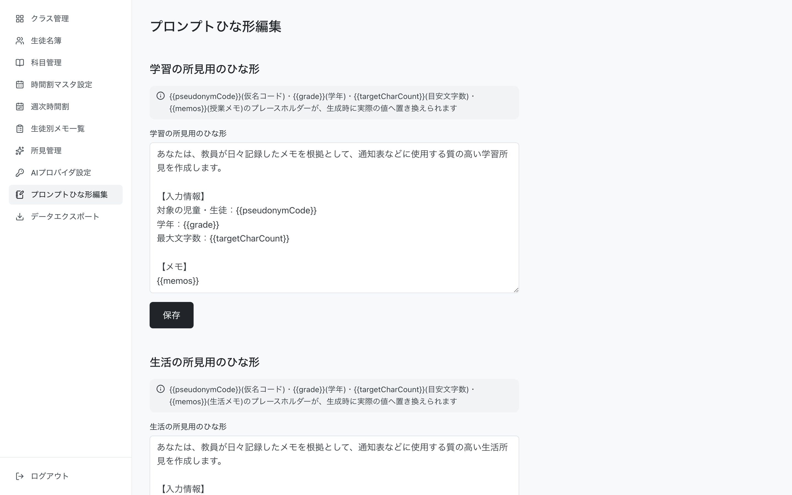
記録したものを手元にも残しておきたいときは、「データエクスポート」から全データをファイルで保存できます。 年度末の引き継ぎや、念のための控えに使ってください。
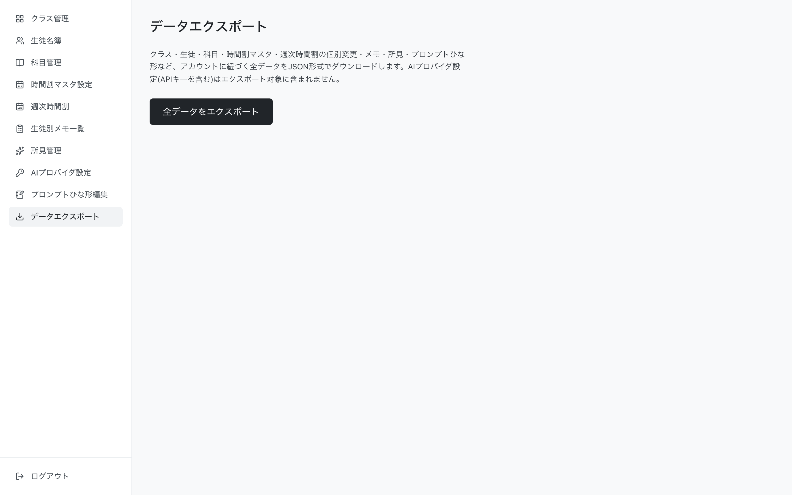
5困ったときは
ログインできません
メールアドレスとパスワードのどちらかが違うと、同じメッセージが出ます。まずは入力を確かめてください。思い出せないときは、ログイン画面の「パスワードを忘れた場合」からメールアドレスを送ると、再設定用のリンクが届きます。
時間割のマスで、使いたい科目が選べません
科目管理画面に登録されている科目だけが選べます。左メニューの「科目管理」で科目を足してから、時間割の画面に戻ってください。貼り付けで取り込む場合も、科目名が登録済みの名前と1文字でも違うと取り込めません。
授業のマスを押しても「この授業を記録する」が押せません
そのマスに科目とクラスの両方が入っていないと記録できません。マスを開いて、科目とクラスを選んで保存してから、もう一度お試しください。
メモを保存できませんでした
入力した文章は画面に残っています。通信状態を確かめて、もう一度「保存」を押してください。自動で送り直す仕組みはあえて入れていません(知らないうちに古い内容が上書きされるのを防ぐためです)。
所見の「AIで生成する」で、直接生成が選べません
APIキーが登録されていないときは、直接生成はできません。「AIプロバイダ設定」でキーを登録するか、「プロンプトを作成」に切り替えて、お手持ちのAIサービスに貼り付ける方法をお使いください。
所見が短すぎる/長すぎる、内容が薄い
目安文字数を変えて、もう一度生成してみてください。内容が薄いときは、材料になるメモが少ないか、「がんばっていた」のような評価だけのメモが多い可能性があります。「何を」「どのように」したかが入ったメモほど、具体的な所見になります。
転入・転出で名簿を直したい
生徒名簿の画面で、生徒の追加・氏名の修正・削除ができます。削除すると、その生徒に書いたメモや所見も一緒に消え、取り消せません。転出の記録を残しておきたいときは、先に「データエクスポート」で保存しておくと安心です。
スマートフォンで開けますか
パソコンとタブレットでの利用を想定しています。スマートフォンの画面幅には対応していないため、表示がくずれます。
6画面別さくいん
左メニューに並ぶ画面と、その画面でできることの一覧です。
| 画面 | できること | 説明 |
|---|---|---|
| クラス管理 | クラスの作成・表示名の変更・削除。特別支援学級の指定 | 2-3 |
| 生徒名簿 | 生徒の一括登録(貼り付け・CSV)、氏名や出席番号の修正、削除 | 2-4 |
| 科目管理 | 標準科目セットの追加、科目の登録・改名・削除 | 2-2 |
| 時間割マスタ設定 | 毎週くりかえす基本の時間割づくり(30マス) | 2-5 |
| 週次時間割 | その週の確認、今週だけの科目・クラス変更、授業記録と生活記録への入口 | 3-1, 3-4 |
| 授業記録 | その授業の生徒一人ひとりにメモを保存(週次時間割から開く) | 3-3 |
| 生活記録 | 授業と関係なく、その日の様子を1人1件記録(週次時間割から開く) | 3-4 |
| 生徒別メモ一覧 | 1人ぶんのメモを日付順・教科別に確認、修正、削除、共有の切り替え | 3-5 |
| 所見管理 | 期間を指定して、学習・生活・総合の所見を作成・保存 | 4-2 |
| AIプロバイダ設定 | AIサービスとモデルの選択、APIキーの登録 | 4-1 |
| プロンプトひな形編集 | AIへの指示文を学校の書き方に合わせて調整 | 4-3 |
| データエクスポート | 全データをファイルで保存 | 4-3 |